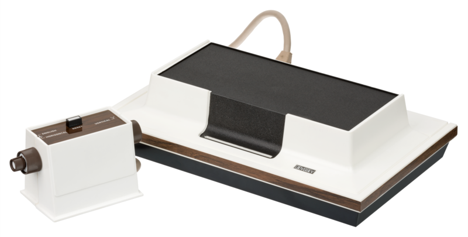

GUILLOT--JACQUINOD ARTHUR 2°3
Les premiers jeux videos sont créés dans les années 50 avec les premiers ordinateur analogiques,bien qu’il se limites d’afficher le jeu sur un écran fixe en attendant l’interactions des joueurs (avec des jeux comme Tic-Tac-Toe ou les échecs). Le premier jeu en temps réel est inventé en 1958 par William Higinbotham qui crée le jeu «Tennis for Two» pour distraire les visiteurs du laboratoire national de Brookhaven à New York. En reliant un oscilloscope à un ordinateur, Higinbotham propose une sorte de tennis simplifié où deux adversaires doivent renvoyer une balle au-dessus d’un filet à l’aide de deux manettes.Un an plus tard, il adapte son jeu sur un écran cathodique 15 pouces. Persuadé, à tort, qu’il n’a là rien inventé, il ne dépose pas son idée. Tennis for Two est une sorte de prédécesseur de Pong (un jeux d’arcade très connue).

La première console de jeux vidéos est « l’Odyssey », c'est une console de la première génération commercialisée par Magnavox en septembre 1972 aux États-Unis, puis en 1973 dans le reste du monde. Elle se présente sous la forme d'une boîte blanche avec un système de cartes de jeu, contenant des circuits numériques équipés de composants discrets, et qui se connecte à un téléviseur. L'Odyssey peut afficher simultanément trois points carrés distincts à l'écran, en monochrome noir et blanc, et permet un comportement différent pour chacun des points en fonction du jeu. Les joueurs placent un calque en plastique sur l'écran et un ou deux joueurs utilisent les boutons rotatifs des contrôleurs de jeu reliés avec des fils à la console, afin de déplacer les points à l'écran. L'Odyssey est commercialisée avec toute une panoplie d'accessoires tels que des dés, des cartes de jeu, des billets fictifs en papier, des jetons et des plateaux de jeux, qui sont utilisés conjointement aux jeux vidéo. Suivant les localisations, un peu plus d'une dizaine de jeux sont inclus avec la console et quelques jeux sont commercialisés en 1972, puis en 1973. Un périphérique appelé Shooting Gallery, sous forme de pistolet optique avec quatre jeux, est vendu séparément en 1972. La ludothèque comporte vingt-huit jeux au total.
La plupart des développements de l'époque se produisent sur les bornes d'arcade et les consoles de jeu, pourtant, l'évolution rapide des micro-ordinateurs débute au milieu des années 1970, il permet à leurs utilisateurs de programmer des jeux vidéo simples. Rapidement, plusieurs de ces jeux (généralement des clones des jeux d'arcade) sont distribués par toutes sortes de canaux, leur code source souvent imprimé dans des livres (le Basic Computer Games de David Ahl, par exemple) ou des magazines (Creative Computing en particulier), ce qui permettait de le taper chez soi.Un autre moyen de distribution reposait sur l'envoi par la poste de disquettes, cassettes ou cartouches, ce qui créa une petite industrie où des programmeurs amateurs vendaient des disquettes dans des sacs en plastique et les envoyaient à leurs acquéreurs.

Apple II
Au début des années 1980, les jeux vidéo sont principalement joués sur des bornes d’arcade. Les consoles individuelles, qui ne sont pas autant répandues, ne supportent qu’un nombre limité de jeux, souvent mal adaptés de ces bornes. Concurrencé par les ordinateurs personnels, le krach du jeu vidéo de 1983 commence ( le krach du jeu vidéo de 1983 étant un krach qui a énormément impacté et endommagé l’industrie des jeux vidéos.). Les jeux vidéo vont alors se développer principalement sur les ordinateurs personnels. Des icônes du jeu vidéo vont toutefois naître durant cette période. À partir du moment où le marché des consoles de jeu redémarrera avec des jeux spécifiquement développés pour elles, grâce à Nintendo et Super Mario Bros. en 198522, une distinction sera systématiquement effectuée entre jeux sur console et jeux sur ordinateur.